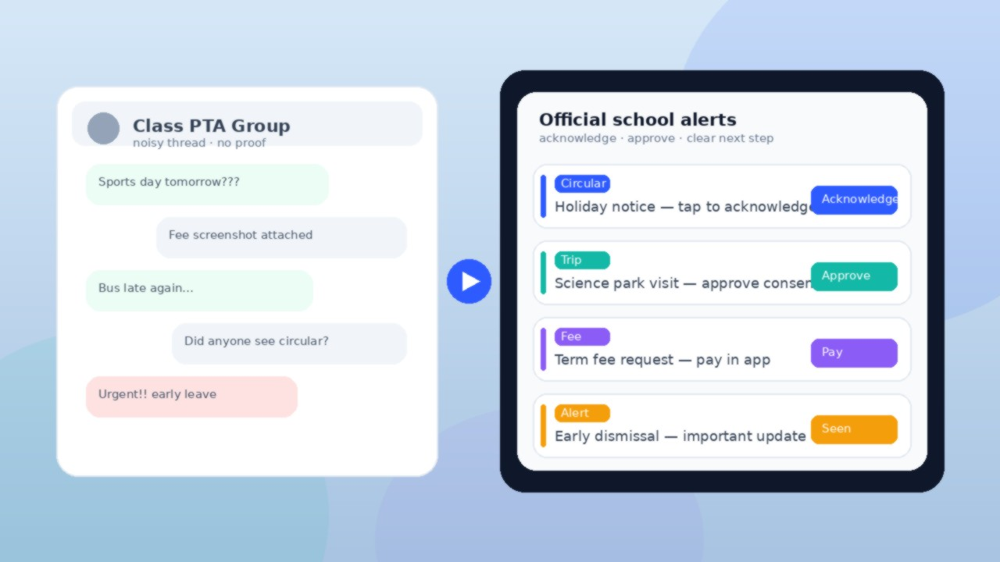

Most Indian schools do not lack parent reach. They have WhatsApp PTA groups, class chats, and forward chains that light up every morning. What they lack is school parent communication the office can prove: who saw the circular, who approved the trip, and who still needs a follow-up.
Structured acknowledgements fix that gap. Instead of “please note” sinking in a noisy thread, parents get a typed alert with a clear next step — acknowledge, approve, pay, or open the related record — and the school keeps a trail.
If you lead a school in India and still run official updates mainly through PTA groups, this guide is a practical migration path: what to keep on chat, what to move first, how to roll out without confusing families, and how ConnectEdu supports acknowledgements on the same stack as attendance, fees, bus, and exams. For the broader category definition, see what a school parent engagement platform is. For why open-and-act beats chat noise, see school–parent communication parents actually open.
PTA and class WhatsApp groups are useful for informal community talk: sports-day volunteering, lost water bottles, celebration photos. They become a problem when the same feed carries:
Common failure modes school admins already feel:
Migration is not “ban WhatsApp.” It is moving official school parent communication to structured alerts with acknowledgements, while informal PTA talk can stay informal.
A structured acknowledgement is an official school alert with three properties:
That is different from a chat reply. A reply is conversation. An acknowledgement is an admin record.
| Official need | WhatsApp PTA group | Structured acknowledgement |
|---|---|---|
| Holiday / circular receipt | “Please note” + hope | Acknowledge with logged seen |
| Field trip consent | Poll, voice notes, or silence | Approve / reject on the request |
| Fee notice | Screenshot debates | Payment request with pay in channel |
| Early dismissal | Urgent text buried in noise | Distinct important / emergency alert |
| Proof for the office | Screenshots and memory | Who was notified and who acted |
Approvals (accept/reject a trip) and payment requests sit in the same pattern as acknowledgements: one official list, clear next step, school-controlled channel.


Schools get stuck when they flip every message type on day one. A staged path works better.
Write a one-page rule for staff and class teachers:
Share that line with parents once, in plain language: Official school notices will now arrive in the parent app with an Acknowledge or Approve button. Class WhatsApp stays for informal talk.
Start with the messages that create Monday phone calls:
Leave homework chatter and optional PTA discussion where they are until the office trusts the new channel.
Send by class and section. After each official circular, the office question becomes: Who has not acknowledged? — not Did anyone screenshot the group?
Train one front-office habit: do not re-forward the same circular into WhatsApp “just in case.” That trains parents to ignore the official channel. Follow up only with families who have not acknowledged.
Once acknowledgements stick, parents open the app for usefulness, not only for notices:
That is how migration becomes habit instead of another login parents forget. For the full stack framing, see the complete school management system for Indian schools guide.
Use this before you announce the switch campus-wide:
If three or more items are missing, fix the readiness gap before a big-bang cutover.
ConnectEdu is a school management system and parent engagement platform: web for school teams; mobile for parents, teachers, and bus drivers. Structured school parent communication sits on the same stack as attendance, fees, transport, and exams — so acknowledgements are not a parallel chat product.
What you can use when moving off WhatsApp-as-system-of-record:
For the WhatsApp-vs-platform ops contrast, see why WhatsApp groups are not enough. This post stays on the migration path: acknowledgements first, then ops habit.
Admin note (light): school admins can also use ConnectEdu’s Admin AI Agent for schools to ask questions on live school data via secure database queries (any language in, English out). It can also add or update student and staff records. It does not send reminders or parent outreach. Parent communication still runs through structured modules.
PTA groups are fine for informal talk, but they struggle with targeting, acknowledgement proof, privacy of personal numbers, and links to fees, attendance, bus, and exams. Official circulars and consents need a school-controlled channel with a clear next step.
It is an official alert parents can mark as seen (or approve/reject when consent is needed), so the school has a record instead of relying on chat screenshots. Payment requests follow the same interactive pattern.
Not necessarily. Many schools keep informal community chat and move official notices, consents, fee requests, and emergencies to the parent app. The important change is which channel is the system of record.
With acknowledgements and approvals logged in the school system, the office can follow up only with families who have not completed the step — instead of re-broadcasting into a noisy group.
Yes — when communication lives inside a school management and parent engagement platform. ConnectEdu ties those modules to the parent mobile experience so opening the app becomes useful every day, not only when a circular arrives.
If your campus still proves “parents were informed” with WhatsApp screenshots, the next step is not another PTA group. Start with structured acknowledgements for circulars and consents, stop double-sending into chat, and let attendance, fees, bus, and exam signals earn daily opens in the same official app.
Explore ConnectEdu for the school management and parent engagement stack, review the Admin AI Agent for schools for live-data Q&A at the desk, and book a demo or use school login to see targeting, acknowledgements, approvals, and payment requests work together.